Robot setup
The robot needs to be prepared before it can be used with the client library.
CB3 robots can directly be used with the ur_client_library. No special preparation is needed.
There are two ways the client library can be enabled to send command to the robot.
Remote control: There the full control is given to the client library and enables it to e.g. power on and off, brake release, load PolyScope programs and send URScript programs directly to the controller.
External Control URCap: There the control to power on, off and start programs etc. still remains on the teach pendant. The External Control URCap injects the needed URScript code from the client library. This also makes it possible to combine the use of the client library and other PolyScope program nodes, like standard moves or other third-party URCaps.
Enable remote control:
Go to the hamburger menu -> settings.
Go to System -> Remote control.
Unlock the menu using the admin password, and enable Remote Control.
Press exit.
The robot can now be toggled between local and remote control in the upper right hand corner.
{kind=link}
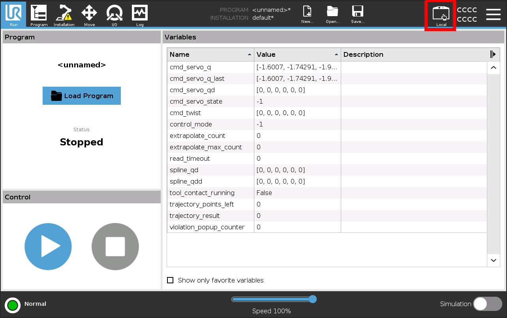
If using PolyScope 5.10 or greater: Enable services
Go to the hamburger menu -> settings.
Go to Security -> Services.
Unlock the menu using the admin password.
Enable the Dashboard Server, Primary Client Interface and Real-Time Data Exchange (RTDE) interfaces.
Lock the menu and press exit.
{kind=link}
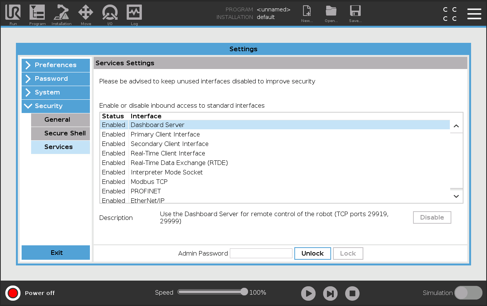
Enable services:
Go to the hamburger menu -> settings.
Go to Security -> Services.
Unlock the menu using the admin password.
Enable the Primary Client Interface and Real-Time Data Exchange (RTDE) interfaces.
Lock the menu and press exit.
{kind=link}
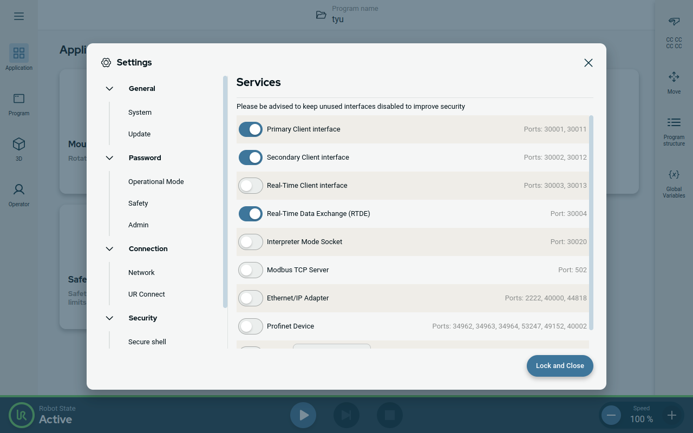
URCap installation
To use the client library with a robot, you’ll have to have the External Control URCap installed. It allows a remote PC to control the robot externally. Generally, you will launch the driver on the remote PC and then start a program from the tech pendant to connect to the remote application.
Note
A minimal PolyScope version of 3.14.3 is required to use this URCap
The latest release can be downloaded from its own repository.
To install the URCap you first have to copy it to the robot’s programs folder which can be done either via scp or using a USB stick.
On the welcome screen select Setup Robot and then URCaps to enter the URCaps installation screen.
{kind=link}
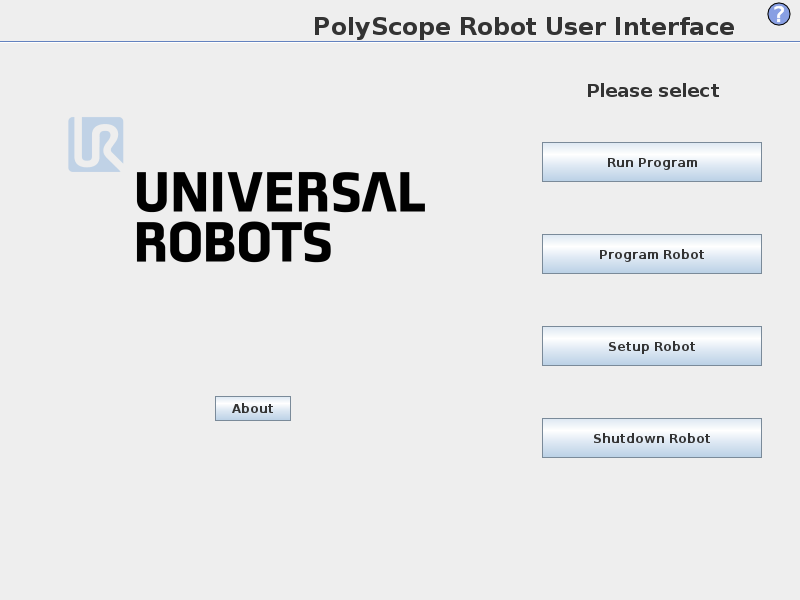
There, click the little plus sign at the bottom to open the file selector. There you should see all urcap files stored inside the robot’s programs folder or a plugged USB drive. Select and open the externalcontrol-X.Y.Z.urcap file and click open. Your URCaps view should now show the External Control in the list of active URCaps and a notification to restart the robot. Do that now.
{kind=link}
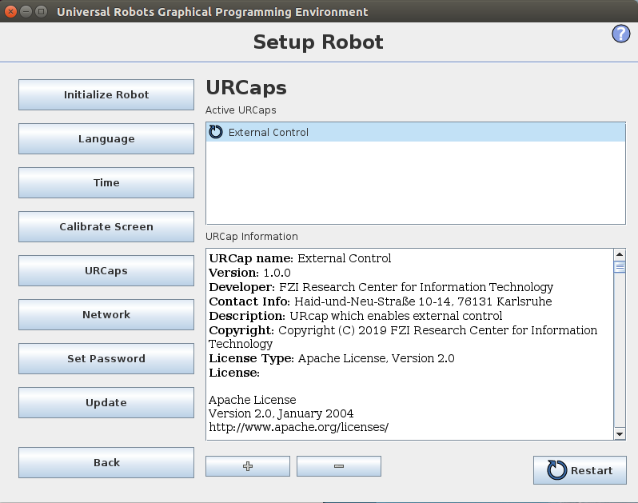
After the reboot you should find the External Control URCaps inside the Installation section. For this select Program Robot on the welcome screen, select the Installation tab and select External Control from the list.
{kind=link}
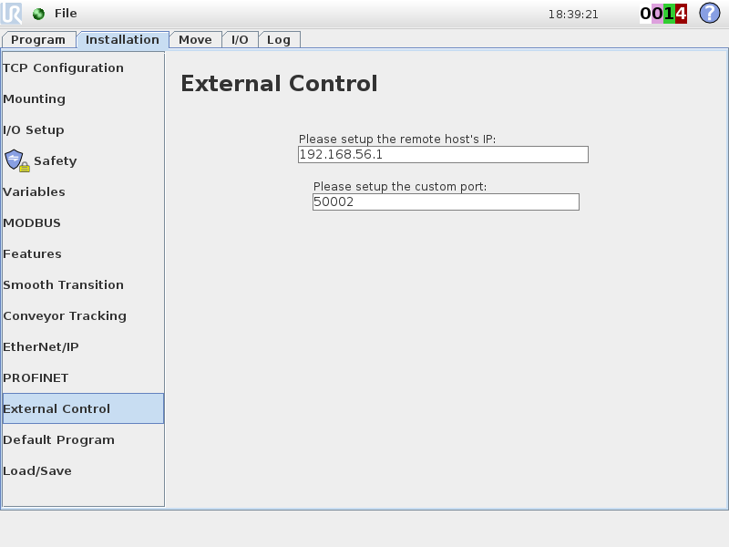
Here you’ll have to setup the IP address of the external PC which will be running the remote application. Note that the robot and the external PC have to be in the same network, ideally in a direct connection with each other to minimize network disturbances. The custom port should be left untouched for now.
{kind=link}
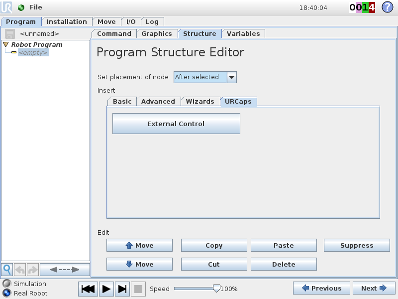
To use the new URCaps, create a new program and insert the External Control program node into the program tree
{kind=link}
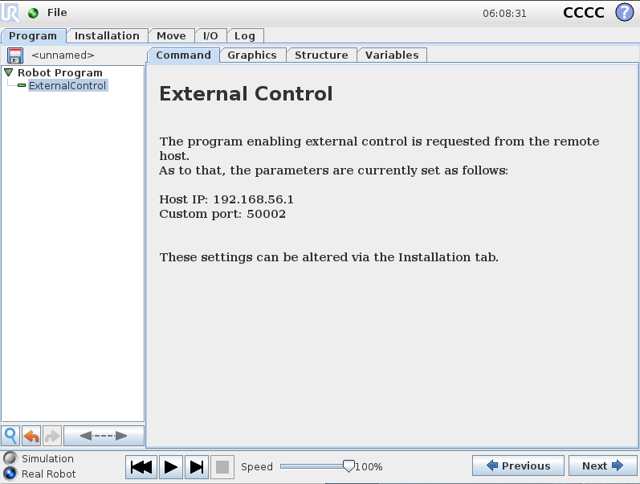
If you click on the command tab again, you’ll see the settings entered inside the Installation. Check that they are correct, then save the program. Your robot is now ready to be used together with this driver
Note
A minimal PolyScope version of 5.9.4 is required to use this URCap
The latest release can be downloaded from its own repository.
To install it you first have to copy it to the robot’s programs folder which can be done either via scp or using a USB stick.
On the welcome screen click on the hamburger menu in the top-right corner and select Settings to enter the robot’s setup. There select System and then URCaps to enter the URCaps installation screen.
{kind=link}
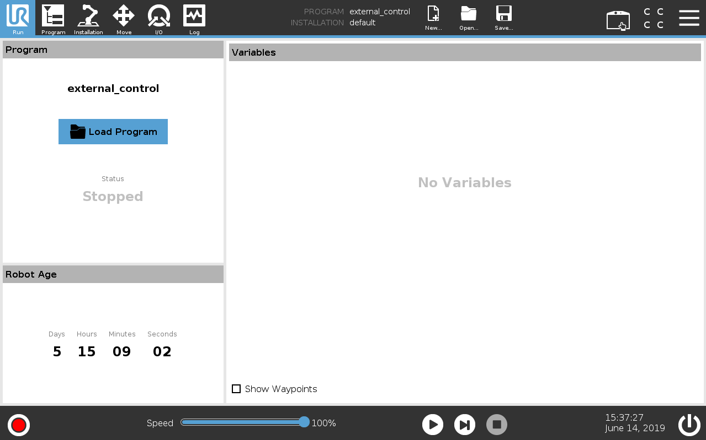
There, click the little plus sign at the bottom to open the file selector. There you should see all urcap files stored inside the robot’s programs folder or a plugged USB drive. Select and open the externalcontrol-X.Y.Z.urcap file and click open. Your URCaps view should now show the External Control in the list of active URCaps and a notification to restart the robot. Do that now.
{kind=link}
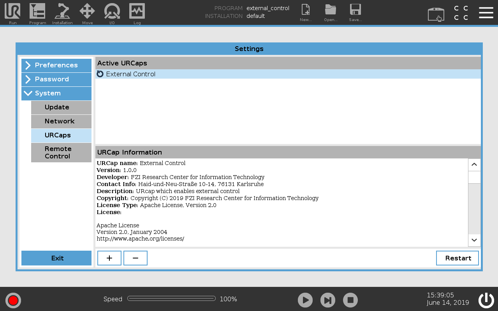
After the reboot you should find the External Control URCaps inside the Installation section. For this select Program Robot on the welcome screen, select the Installation tab and select External Control from the list.
{kind=link}
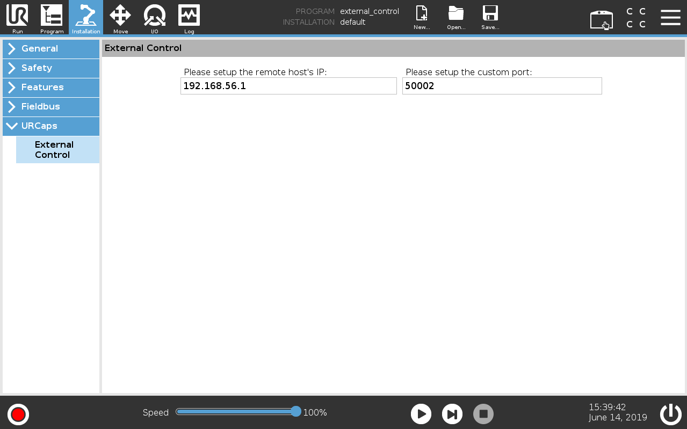
Here you’ll have to setup the IP address of the external PC which will be running the remote application. Note that the robot and the external PC have to be in the same network, ideally in a direct connection with each other to minimize network disturbances. The custom port should be left untouched for now.
{kind=link}
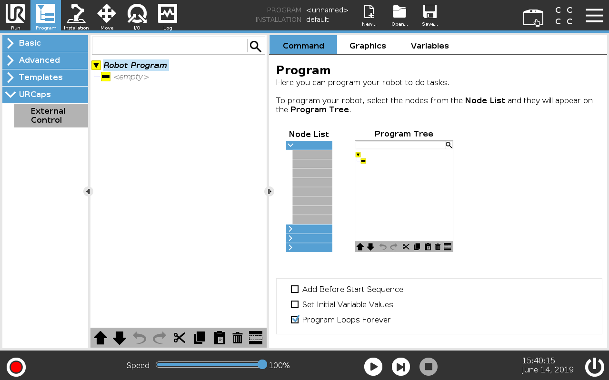
To use the new URCaps, create a new program and insert the External Control program node into the program tree
{kind=link}
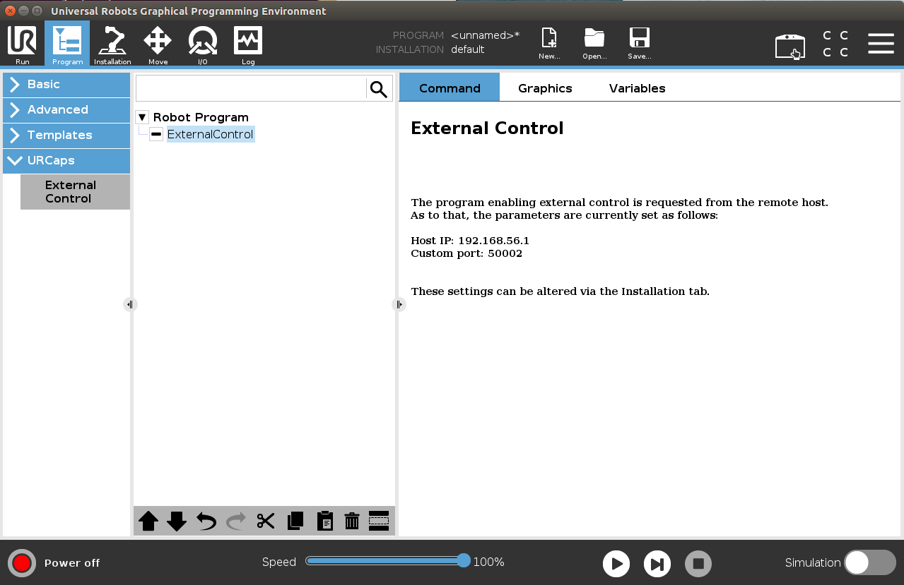
If you click on the command tab again, you’ll see the settings entered inside the Installation. Check that they are correct, then save the program. Your robot is now ready to be used together with this driver.
The latest release can be downloaded from GitHub (URCapX).
To install it you first have to copy it to a USB stick and plug that into the robot’s teach pendant.
On the welcome screen click on the hamburger menu in the top-left corner and select System Manager to enter the robot’s setup. There select URCaps to enter the URCaps installation screen. You’ll have to press unlock and enter the admin password to be able to install new URCaps.
{kind=link}
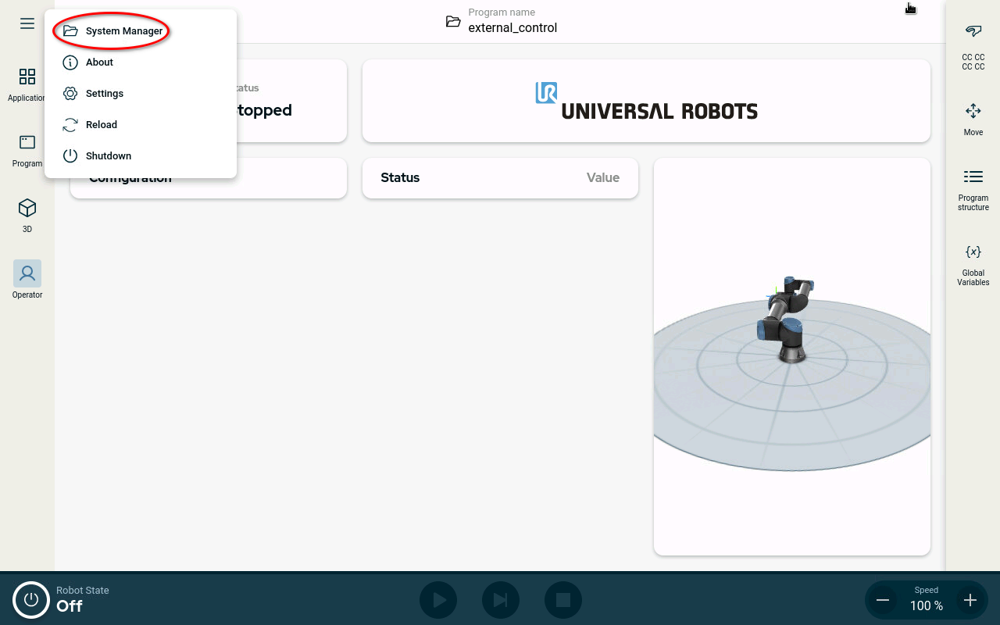
There, click the “+URCap” button at the top-right to open the file selector. There you should see all urcap files stored on a plugged USB drive. Select and open the external-control-X.Y.Z.urcapx file and click Confirm. A popup should ask you to confirm the installation.
{kind=link}
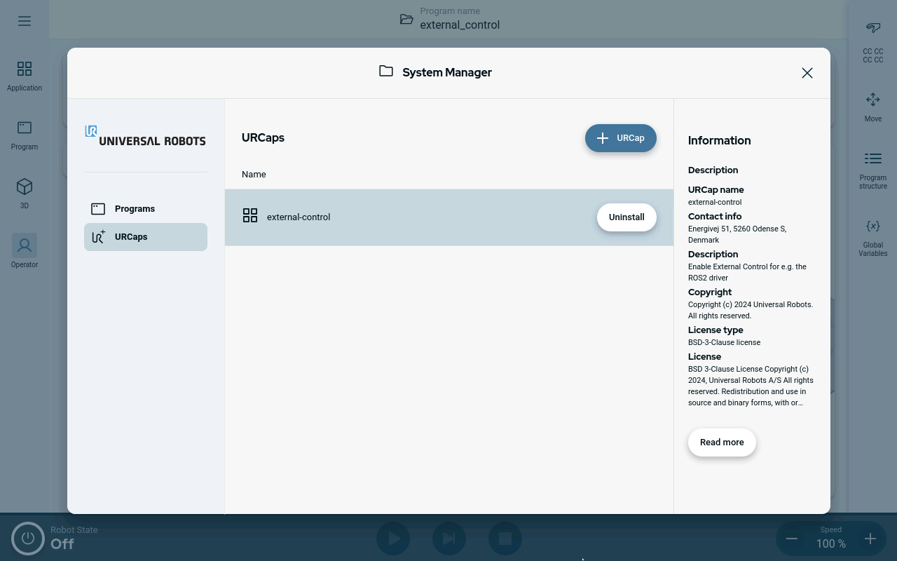
Upon confirmation, the external-control URCap should be listed as installed.
After the robot rebooted you should find the External Control URCapX on the Application Screen. If you open it, you will get to its configuration screen.
{kind=link}
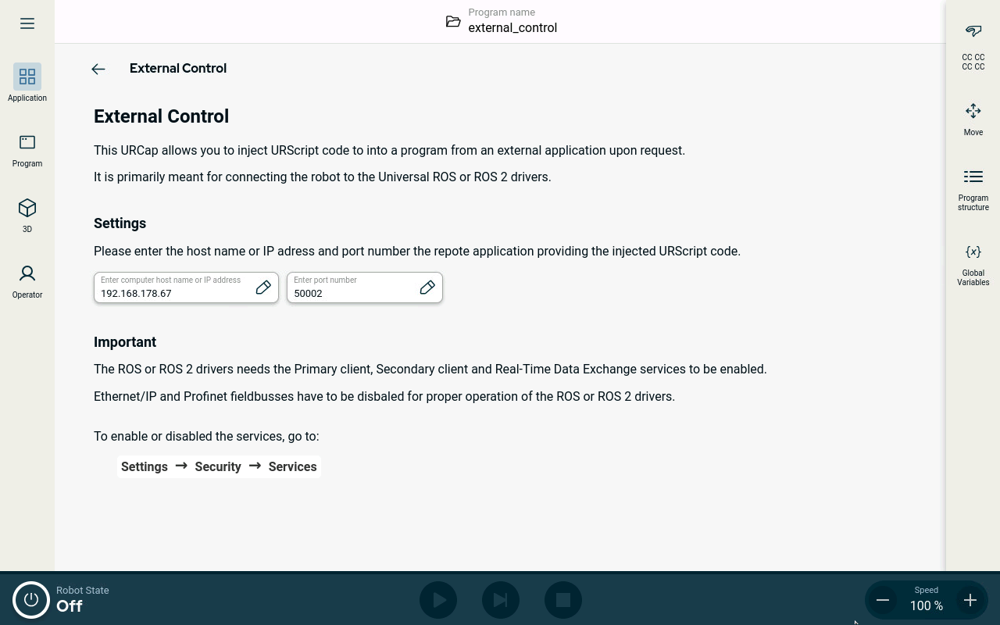
Here you’ll have to setup the IP address of the external PC which will be running the remote application. Note that the robot and the external PC have to be in the same network, ideally in a direct connection with each other to minimize network disturbances. The custom port should be left untouched for now.
To use the new URCaps, create a new program and insert the External Control program node into the program tree
{kind=link}
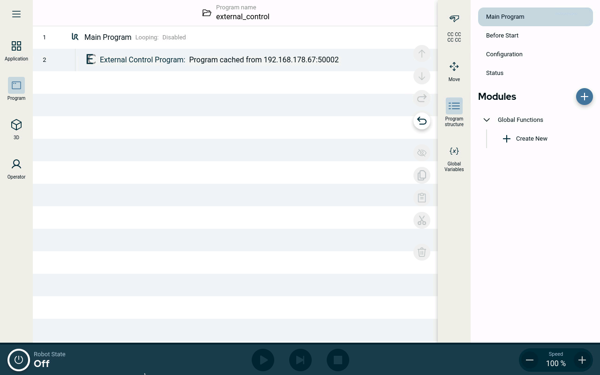
{kind=link}
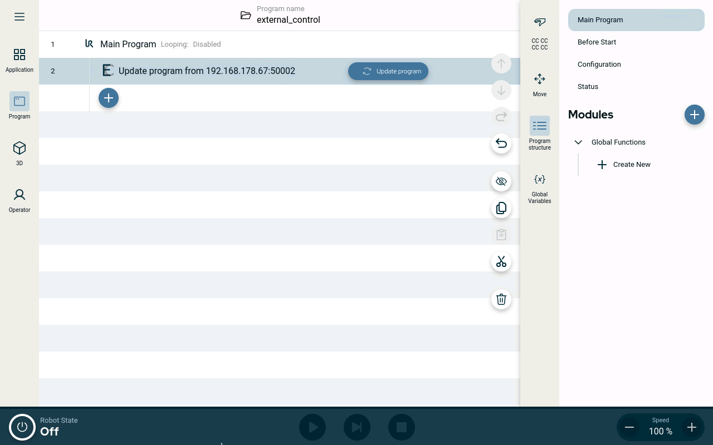
If you select the External Control program node, you’ll see a button “Update program” appearing next to it. With the external application started, press it to receive the script code.